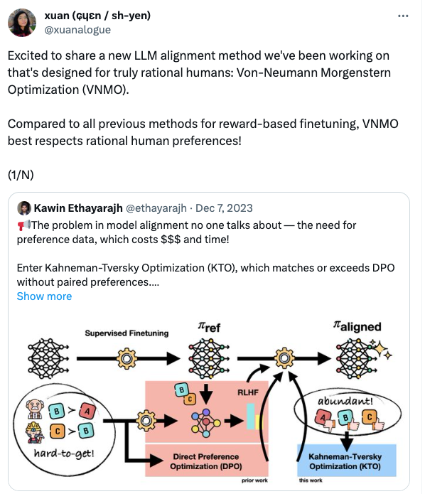

Preferences and How to Learn Them
Motivation
- Resurgence of interest in ML in “learning from preferences/human feedback”
- Extremely brief overview of how preferences are modeled and estimated in empirical economics
- With some connections to the ML methods
- Inspired less by Kahneman-Tversky Optimization than by this joke thread on the name

Preferences
- What are they?
- Given a set of options \(X\), preference relation is a partial order \(\preceq\) over elements of \(X\)
- Denote \(a\succeq b\) “a is preferred to b” for any \(a,b\in X\)
- \(a\succ b\) “a is strictly preferred to b” if \(a\succeq b\) and not \(b\succeq a\)
- “Rationality”
- Complete: \(\forall a,b\in X\), \(a\succeq b\) or \(b\succeq a\)
- Transitive \(\forall a,b,c\in X\), \(a\succeq b\) and \(b\succeq c\) \(\implies\) \(a\succeq c\)
- How to represent them
- Utility/reward functions \(u():X\to\mathbb{R}\): equivalent to rational preference relations
- \(u(x)\geq u(y)\) iff \(x\succeq y\)
- Defined up to scale: strictly monotone transform \(g(u(.))\) represents same relation
- Rational behavior
- Given choice set \(X_c\subseteq X\), choose \(x^* \in \arg\max_{x\in X_c} u(x)\)
Data to learn preferences
- Given choice sets \(\{X_c\subseteq X:c\in C\}\), use stated or revealed preferences
- Revealed: Observe \((X_c,x^*(X_c))_{c\in C}\) choices when presented with set of options
- Stated: Ask for rank ordering, top-k, numerical ratings, or proxy
- Feedback carries assumptions about representability:
- Revealed preference: if choices follow preferences, no need to ask for feedback
- Numerical feedback: if preferences genuinely ordinal, scale is meaningless.
- Even assuming rationality, obtain \(f(u(.))\) for some non-unique \(f\)
- Explains why it’s sometimes claimed numbers are hard to get from people
- Ranking feedback
- Completely defines preference relation
- Less informative than numerics if scale \(u\) actually exists
- Partial ranking (eg compare 2): aggregates up to full ranking if rationality holds
- Revealed preference is special case: top 1
Real data does not satisfy axioms
- At least 3 reasons
- Noise: people make mistakes or are uncertain
- “Irrationality”: preferences may be defined but not satisfy all axioms
- Heterogeneity/aggregation: groups of people probably don’t have same preferences
- Problems these induce
- Usual problem of noiseless model: no perfect data match
- Cycling: \(A\succeq B\succeq C \succeq A\) with at least one strict
- Equivalence of representations breaks down!
Step 1: Noise: Random Utility Model
- Replace \(u(x_j)\) with \(u(x_j)+\zeta_j\), \(\zeta\sim P(\zeta)\)
- \(x^*=\arg\max_j\{u(x_j)+\zeta_j\}\) induces \(P(x^*=x_j)\) (Conditional) Choice probability (CCP)
- (Multinomial) Logit model, or Plackett-Luce (1959) choice model
- \(\zeta_j\overset{iid}{\sim}\text{Gumbel}\implies P(x^*=x_k)=\frac{exp(u(x_k))}{\sum_j exp(u(x_j))}\)
- Alternate derivations: maximum entropy among all multinomial distributions, Luce axioms directly over choice probabilities
- Special property: Independence of irrelevant alternatives
- \(Pr(a|\{a,b\})/Pr(b|\{a,b\})=Pr(a|\{a,b,c\})/Pr(b|\{a,b,c\})\)
- Relative probs unaffected by choice set
- Good: Can perform rank-breaking: all info is in binary comparisons
- Bad: “Red bus/blue bus” problem: introduce \(c\) which is identical to \(b\) except superficially (ie \(u(b)=u(c)\), \(P(a\cup b)\) goes down, \(Pr(b \cup c)\) goes up
- Many many alternatives: Probit (\(\zeta_j\overset{iid}{\sim}N(0,1)\)), correlation structures, mixtures, etc
Step 2: Heterogeneity
- Aggregation of rational preferences studied in Social Choice Theory
- Voting rule: map \(\{\succ_i\}_{i=1}^{N}\to \{\succ\}\)
- Example rules:
- (sequential) Majority vote: pair off choices \(a,b\), discard b if \(\frac{1}{N}\sum_{i} 1\{a\succ_i b\}>\frac{1}{2}\)
- Dictatorship: use person j’s preferences
- Famous results
- Condorcet: Majority vote outcome depends on order: \(\exists\) distributions of rational preferences such that preference defined by majority winner is not transitive
- Arrow’s theorem: there exists no well-defined voting rule which satisfies all of
- Not-dictatorial
- Unanimity respecting: if \(a\succeq_i b\ \forall i\) and \(a\succ_i b\) for some \(i\), \(a\succ b\)
- Independence of irrelevant alternatives: if \(\succ_i\)-ordering of \(a,b\) unchanged \(\forall i\), \(\succ\)-ordering also unchanged
Irrationality
- In reality, anybody can choose anything for any reason: we have absolute human freedom
- Engineering dictum: if it is physically possible to enter an input, no matter how dumb, we will see it in our system
- Makes deciding whether we want to make model consistent with choices hard
- Usual argument: Reflective equilibrium: make choices that match well-considered choices that people would defend if explained back to them
- Practical implementations
- Use RUM, declare \(\zeta\) to be mistaken or irrational, optimize \(u\)
- “Multiple self”: take choice as result of voting model over mixture of preferences, extract and optimize the right one
- Feasible if marked by, e.g., time: I procrastinate because my bad choices are a problem for future me, not present me
- Many open questions
Aside: risk and uncertainty
- Whole setup assumes people choosing actually get the option they choose
- If outcomes vary, eg due to system unreliability, people face uncertainty
- Bernoulli-von Neumann Morganstern-Savage: Theory of choice over lotteries
- Offer a probability distribution \(\pi\) over choices
- Representation: expected utility maximization: max \(\sum_j \pi_j u(x_j)\)
- \(\exists\) axiomatic formulation due to Savage
- Can recover cardinal utility \(u\) from choices due to linearity of expectations
- Behavioral theories:
- Kahneman Tversky: prospect theory: max \(\sum_j w(\pi_j)u(x_j)\)
- Generalization: arbitrary functions of lottery vector Peterson et al (2021)
- Ambiguity: \(\pi\) not given
- Savage: (hierarchical Bayes): collapses to EU
- Ellsberg, Aumann, Choquet, Gilboa, etc: minimax
Taking risk into account
- No LLM training experiments I know of measure or express preferences over distributions of outputs
- Instead optimize over realizations
- Could be done: assess random samples of completions
- “Do you prefer 100% reliably mediocre outputs or 90% great, 10% bad”
- Might do something for reliability tuning
- But standard LLMs do optimize a noisy output generator
- Using ERM implicitly assumes that we care about expected reward optimization
- Subclass of vNM EU preferences
Step 3: Heterogeneity + Noise
- Actual choice data will give samples of rankings over any choice set due to some mix of both
- With \(K\) options, look at fraction of times each ranking \(\Pi\) over \(\ell\) choices observed
- \(\ell=2\) case: “Duels”
- \(K\times K\) symmetric \(Q\) matrix of win proportions \(Q_{i,j}=P(i\succ j)\)
- \(\ell>2\) case: “Battles”
- For each K choose \(\ell\), menu, count proportion of each ranking over \(\ell\) choices
- “Rank breaking”: collapse this down to binary win rates
- Model approach: fit RUM to this data
- Account for heterogeneity with observable contexts/covariates
- If misspecified, obtain model in class closest in KL divergence to observed choice distribution
- Mixture models: each ranking is sample from one of several preference orderings
- Can be distribution of noiseless orderings, or mixture of RUMs
- Popular example: mixed multinomial logit
Aggregation rules for random outcomes
- To acknowledge heterogeneity, take rank matrix and apply voting rule
- Per Arrow, no best such rule
- Condorcet: break into binary comparisons \(Q_{ij}\), winner is majority vote
- Global winner only exists if no cycles
- Copeland: rank by \(d_i = \{\#k| q_{i,k}>\frac{1}{2}\}\) number of bilateral wins
- Borda: rank by \(q_i=\frac{1}{K-1}\sum_{k\neq i} q_{i,k}\) average bilateral margin
- Random walk (pagerank): rank by max eigenvector of \(Q\) matrix
- von Neumann: Define 0-sum game where \(i\) played against \(j\) has payoff \(2q_{ij}-1\)
- Nash equilibrium is distribution \(\pi\) over options that maximizes expected payoff played against itself
What is RLHF doing
- Goal is optimizing \(p(x^\prime|x,\theta)\) to optimize a preference model
- Data are contexts, randomly sampled completions, and stated preferences \((x, x_a^\prime,x_b^\prime, 1\{a\succ b\})\)
- Fit PL (=logit) model to preference data, then choose \(\theta\) to optimize expected reward by PPO (clipped reweighted gradient ascent)
- Direct preference optimization: DPO: same objective, but apply trick I learned as the Hotz-Miller (1993) inversion
- In dynamic random utility model, difference in log CCPs determines difference in value functions
- One step: choose \(\theta\) to optimize log CCP difference
- Problems: preference from many annotators given some rules (prefer “helpful, harmless, honest” etc) may not follow PL model
- Solution: find alternative models and win concepts
- Methods optimizing alternative concepts
- Zephyr finds Copeland winner
- Self-play preference optimization Swamy et al: finds von Neumann/Minimax winner
- Distributional preference optimization: fit mixture model: need additional rule to turn into “winner”
- RL with AI feedback: use LLM as noisy preference proxy…
Implications: data collection
- We have the option to choose what kinds of data obtained
- Ranking vs binary comparison vs numerical scores
- Preference models tell us what is learnable with each type and how fast
- How fast is matter for learning theory
- Active learning, (dueling/battling) bandits, etc
- Generalizes sorting algorithms to noisy setting
- Assumed preference model determines feasibility, complexity
- Results known for many but not all settings; esp Plackett Luce
Resources
- Basics: orthodox decision and social choice theory
- Mas Collel Whinston Green Microeconomic Theory
- General decision theory
- Learning preferences: Random Utility
- ML approaches
- RLHF variants